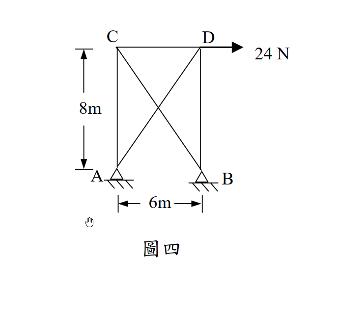

考題編號：[SA-2005-4]
主分類： SA-U2-1 靜不定結構分析
副分類： 無
分析法： 最小功法 / 諧合變位法 (單位力法)
標籤： 靜不定桁架 單位力法 柔度矩陣法 桁架應力
1. 原始題目重述 (Problem Restatement)
桁架（truss）示如圖四，A、B 兩點為鉸接（hinge）。若每根桿件之斷面積為 $10\text{ cm}^2$，楊氏係數 $E = 10^6\text{ N/cm}^2$，則當 D 點有一水平載重 $24\text{ N}$ 時，計算各桿件之應力。（25 分）

圖說：寬 6m、高 8m 之矩形桁架，包含兩條對角線桿件 AC、BD、CD、AD、BC，其中 AD 與 BC 為對角線。底部 A、B 兩點為鉸接支承。D 點有一向右之水平載重 24 N。
2. 考題核心精神與出題者意圖 (Core Concepts & Examiner's Intent)
本題旨在測驗考生對於一次靜不定桁架的分析能力。由於 A、B 皆為鉸接，提供了 4 個反力，加上 5 根桿件，共 9 個未知數；而 4 個節點僅能提供 8 個平衡方程式，因此為一次外部靜不定（或可視為一次內部靜不定，取決於贅力的選擇）。出題者刻意給定所有桿件的斷面積 $A$ 與楊氏係數 $E$ 皆相同，藉此簡化變位計算過程中的常數項。最後更測驗考生是否仔細閱讀題目，本題要求的是應力 (Stress) 而非內力，計算出內力後必須除以斷面積。
3. 解題戰略地圖與陷阱分析 (Strategic Roadmap & Trap Analysis)
作戰計畫：
- 判斷靜不定度：確認為一次靜不定。
- 選定贅力與原結構：解除 B 點的水平束制（改為滾支承），並將 B 點向右之水平反力設為贅力 $R$。
- 分析 $P$ 系統 (實際載重)：計算原結構在外部載重作用下，各桿件之內力 $F_0$。
- 分析 $u$ 系統 (單位載重)：計算原結構在 B 點受單位水平力作用下，各桿件之內力 $u$。
- 建立諧合方程式：利用 $\Delta_{B0} + f_{BB} \cdot R = 0$ 解出贅力 $R$。
- 計算真實內力與應力：利用 $F = F_0 + u \cdot R$ 求出各桿內力，再除以斷面積 $A$ 得到最終應力。
陷阱分析：
- 陷阱一 (未求應力)：許多考生算出桿件內力後便急於作答，忽略了題目要求的是「應力」，漏掉除以斷面積的步驟。
- 陷阱二 (單位不一致)：題目給定的幾何尺寸為公尺 (m)，而斷面積與 $E$ 使用了公分 (cm)。所幸在諧合方程式中 $EA$ 項與長度單位的轉換常數會被等式右邊的零消去，但最終計算應力時，內力單位為 N，面積單位為 cm²，直接相除即可得到 N/cm²。
- 陷阱三 (計算錯誤)：桁架斜桿長度為 10m，正餘弦為 0.6 與 0.8，在節點法分析時需特別注意幾何比例，避免三角函數代錯。
3.5 變數層次分析 (Variable Hierarchy Analysis)
最終目標
計算出一次靜不定桁架中，各桿件之真實內力後，除以斷面積求得各桿應力。
本題關鍵公式（依計算順序）
-
靜不定度計算：
$$i = m + r - 2j$$ -
原結構受實際載重之變位：
$$\Delta_{B0} = \sum \frac{F_0 u L}{EA}$$ -
原結構受單位贅力之柔度：
$$f_{BB} = \sum \frac{u^2 L}{EA}$$ -
諧合方程式（單位力法）：
$$\Delta_{B0} + f_{BB} \cdot \boxed{R} = 0$$ -
真實內力組合：
$$F = F_0 + u \cdot \boxed{R}$$ -
桿件應力：
$$\sigma = \frac{\boxed{F}}{A}$$
L1：題目直接給定
| 符號 | 數值 | 說明 |
|---|---|---|
| $P$ | $24\text{ N}$ | D 點向右水平載重 |
| $A$ | $10\text{ cm}^2$ | 桿件斷面積 |
| $E$ | $10^6\text{ N/cm}^2$ | 楊氏係數 |
| $L_h$ | $6\text{ m}$ | 水平桿 (CD) 長度 |
| $L_v$ | $8\text{ m}$ | 垂直桿 (AC, BD) 長度 |
L2：需知識點推導
幾何與靜不定性質
| 符號 | 公式／來源 | 卡關? |
|---|---|---|
| $L_d$ | $\sqrt{L_h^2 + L_v^2} = 10\text{ m}$ | |
| $i$ | $m + r - 2j = 5 + 4 - 2(4) = 1$ | |
單位力法分析
| 符號 | 公式／來源 | 卡關? |
|---|---|---|
| $R$ | 諧合方程式解出之贅力 | |
| $F_0$ | 原結構承受外部載重之內力 | |
| $u$ | 原結構承受單位贅力之內力 | |
L3：深層知識（不懂就卡住）
| 知識點 | 說明 | 卡關? |
|---|---|---|
| 單位力法 (虛功原理) | 運用 $\sum \frac{F_0 u L}{EA}$ 求算變位，必須能精確算出 $F_0$ 與 $u$ 兩個系統的內力。 | |
| 應力定義 | 解出內力後，務必記得除以斷面積 $A$，否則會失分。 |
4. 步驟化詳細計算過程 (Step-by-Step Detailed Calculation)
Step 1: 判斷靜不定度與選定贅力
- 桁架桿件數 $m = 5$
- 支承反力數 $r = 4$ (A 點 $A_x, A_y$，B 點 $B_x, B_y$)
- 節點數 $j = 4$ (A, B, C, D)
- 靜不定度 $i = m + r - 2j = 5 + 4 - 2 \times 4 = 1$ (一次靜不定)
- 選定贅力：解除 B 點的水平束制 (使其變為滾支承)，並令 B 點向右之水平反力為贅力 $R$ (即 $B_x = R$)。
Step 2: 分析 $P$ 系統 (實際載重作用於原結構)
將 $24\text{ N}$ 載重作用於靜定之原結構 (B 點無水平反力)，計算各桿內力 $F_0$：
- 求支承反力：
- $\sum M_A = 0 \Rightarrow B_{y0} \times 6 - 24 \times 8 = 0 \Rightarrow B_{y0} = 32\text{ N} (\uparrow)$
- $\sum F_y = 0 \Rightarrow A_{y0} + 32 = 0 \Rightarrow A_{y0} = -32\text{ N} (\downarrow)$
- $\sum F_x = 0 \Rightarrow A_{x0} + 24 = 0 \Rightarrow A_{x0} = -24\text{ N} (\leftarrow)$ - 節點法求內力 $F_0$：
- 節點 B ($B_{x0}=0, B_{y0}=32$)：- $\sum F_x = -F_{BC0} \times \frac{6}{10} = 0 \Rightarrow F_{BC0} = 0$
- $\sum F_y = 32 + F_{BD0} + F_{BC0} \times \frac{8}{10} = 0 \Rightarrow F_{BD0} = -32\text{ N (C)}$
- 節點 C ($F_{BC0}=0$)：
- $\sum F_x = F_{CD0} + F_{BC0} \times \frac{6}{10} = 0 \Rightarrow F_{CD0} = 0$
- 節點 A ($A_{x0}=-24, A_{y0}=-32$)：
- $\sum F_x = -24 + F_{AD0} \times \frac{6}{10} = 0 \Rightarrow F_{AD0} = 40\text{ N (T)}$
- $\sum F_y = -32 + F_{AC0} + F_{AD0} \times \frac{8}{10} = 0 \Rightarrow -32 + F_{AC0} + 32 = 0 \Rightarrow F_{AC0} = 0$
(檢核節點 D：$\sum F_x = 24 - F_{AD0} \times 0.6 = 0$；$\sum F_y = -F_{BD0} - F_{AD0} \times 0.8 = -(-32) - 32 = 0$，符合平衡)
Step 3: 分析 $u$ 系統 (單位載重作用於贅力方向)
移除外部載重，僅於 B 點施加向右之單位水平力 $B_x = 1$，計算各桿內力 $u$：
- 求支承反力：
- $\sum M_A = 0 \Rightarrow B_{yu} \times 6 = 0 \Rightarrow B_{yu} = 0$
- $\sum F_y = 0 \Rightarrow A_{yu} = 0$
- $\sum F_x = 0 \Rightarrow A_{xu} + 1 = 0 \Rightarrow A_{xu} = -1 (\leftarrow)$ - 節點法求內力 $u$：
- 節點 B ($B_{xu}=1, B_{yu}=0$)：- $\sum F_x = 1 - u_{BC} \times \frac{6}{10} = 0 \Rightarrow u_{BC} = \frac{5}{3}$
- $\sum F_y = u_{BD} + u_{BC} \times \frac{8}{10} = 0 \Rightarrow u_{BD} = -(\frac{5}{3}) \times \frac{8}{10} = -\frac{4}{3}$
- 節點 C ($u_{BC}=\frac{5}{3}$)：
- $\sum F_x = u_{CD} + u_{BC} \times \frac{6}{10} = 0 \Rightarrow u_{CD} = -(\frac{5}{3}) \times \frac{6}{10} = -1$
- $\sum F_y = -u_{AC} - u_{BC} \times \frac{8}{10} = 0 \Rightarrow u_{AC} = -(\frac{5}{3}) \times \frac{8}{10} = -\frac{4}{3}$
- 節點 A ($A_{xu}=-1, A_{yu}=0$)：
- $\sum F_x = -1 + u_{AD} \times \frac{6}{10} = 0 \Rightarrow u_{AD} = \frac{5}{3}$
(檢核 Y 方向：$u_{AC} + u_{AD} \times 0.8 = -4/3 + 4/3 = 0$，符合平衡)
Step 4: 列表計算變位與贅力 $R$
$EA$ 為常數，為了排版簡潔，計算時先提出 $EA$ 項。
長度 $L$ 單位採用公尺 (m)。
| 桿件 | $L$ (m) | $F_0$ | $u$ | $F_0 u L$ | $u^2 L$ |
|---|---|---|---|---|---|
| AC | 8 | 0 | -4/3 | 0 | $128/9$ |
| BD | 8 | -32 | -4/3 | $1024/3$ | $128/9$ |
| CD | 6 | 0 | -1 | 0 | $54/9 = 6$ |
| AD | 10 | 40 | 5/3 | $2000/3$ | $250/9$ |
| BC | 10 | 0 | 5/3 | 0 | $250/9$ |
| Σ | - | - | - | $3024/3 = 1008$ | $810/9 = 90$ |
- $\Delta_{B0} = \sum \frac{F_0 u L}{EA} = \frac{1008}{EA}$
- $f_{BB} = \sum \frac{u^2 L}{EA} = \frac{90}{EA}$
- 帶入諧合方程式 $\Delta_{B0} + f_{BB} \cdot R = 0$：
$$\frac{1008}{EA} + \frac{90}{EA} R = 0 \Rightarrow 90 R = -1008 \Rightarrow \boxed{R = -11.2\text{ N}}$$
(負號表示真實方向向左)
Step 5: 計算各桿真實內力與應力
真實內力 $F = F_0 + u \cdot R$。
各桿應力 $\sigma = \frac{F}{A}$，其中 $A = 10\text{ cm}^2$。正值為拉應力 (T)，負值為壓應力 (C)。
| 桿件 | $F_0$ | $u \cdot R$ | 真實內力 $F$ (N) | 應力 $\sigma = F/A$ (N/cm²) |
|---|---|---|---|---|
| AC | 0 | $(-4/3)(-11.2)$ | $14.933$ ($224/15$) | $\boxed{1.493\text{ N/cm}^2 \text{ (T)}}$ |
| BD | -32 | $(-4/3)(-11.2)$ | $-17.067$ ($-256/15$) | $\boxed{-1.707\text{ N/cm}^2 \text{ (C)}}$ |
| CD | 0 | $(-1)(-11.2)$ | $11.200$ ($56/5$) | $\boxed{1.120\text{ N/cm}^2 \text{ (T)}}$ |
| AD | 40 | $(5/3)(-11.2)$ | $21.333$ ($320/15$) | $\boxed{2.133\text{ N/cm}^2 \text{ (T)}}$ |
| BC | 0 | $(5/3)(-11.2)$ | $-18.667$ ($-280/15$) | $\boxed{-1.867\text{ N/cm}^2 \text{ (C)}}$ |
5. 關鍵爭議點與進階探討 (Critical Issues & Advanced Discussion)
- 應力單位的選擇：題目給定的載重為 N，面積為 cm²，楊氏係數為 N/cm²，因此最直觀且安全的應力單位即為 N/cm²。雖然 $1\text{ N/cm}^2 = 0.01\text{ MPa}$，但在考場上直接沿用題目的單位系統不僅省時，更可避免換算錯誤（如不小心乘除 100 導致數量級錯誤）。
- 贅力的選擇：本題選擇 B 點之水平反力作為贅力，好處是解開 B 點的水平束制後，原結構就變成了一個常見的靜定桁架（一端鉸接、一端滾支承），對於大部分學生來說分析起來最為熟悉且不易出錯。若是選擇對角線桿件（例如 BC）作為贅力，在分析 $P$ 系統和 $u$ 系統時，所有桿件都會受力，容易徒增計算量與出錯機率。